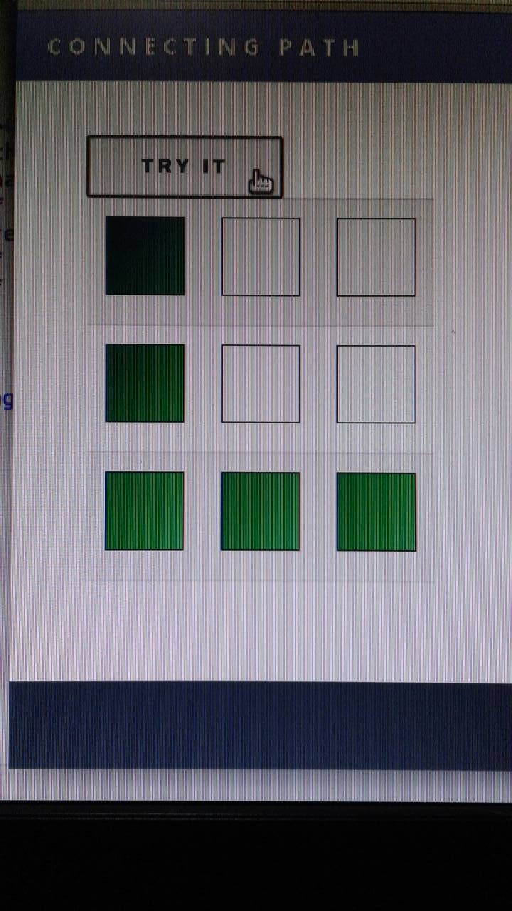
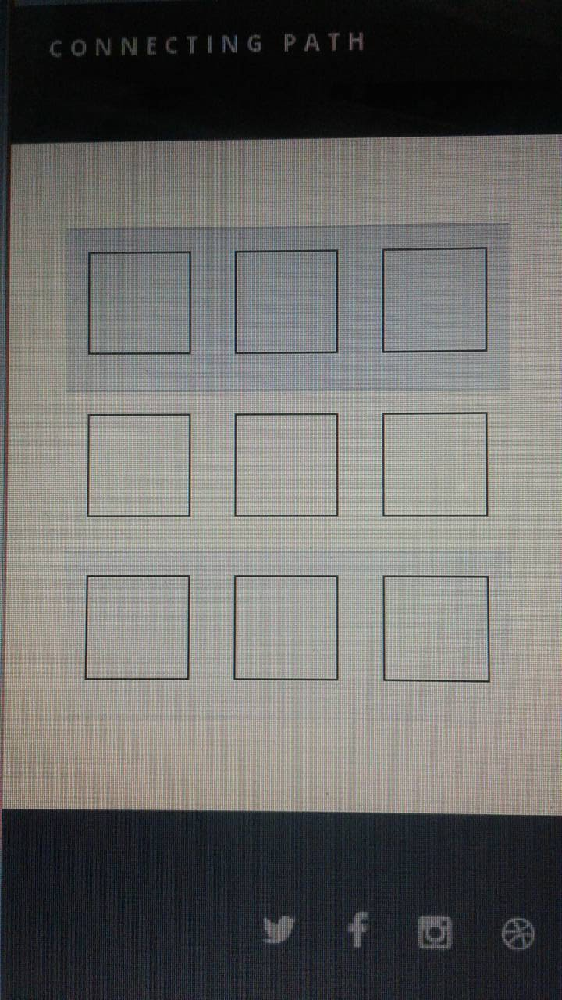
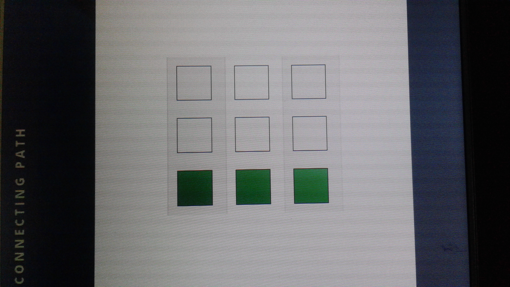
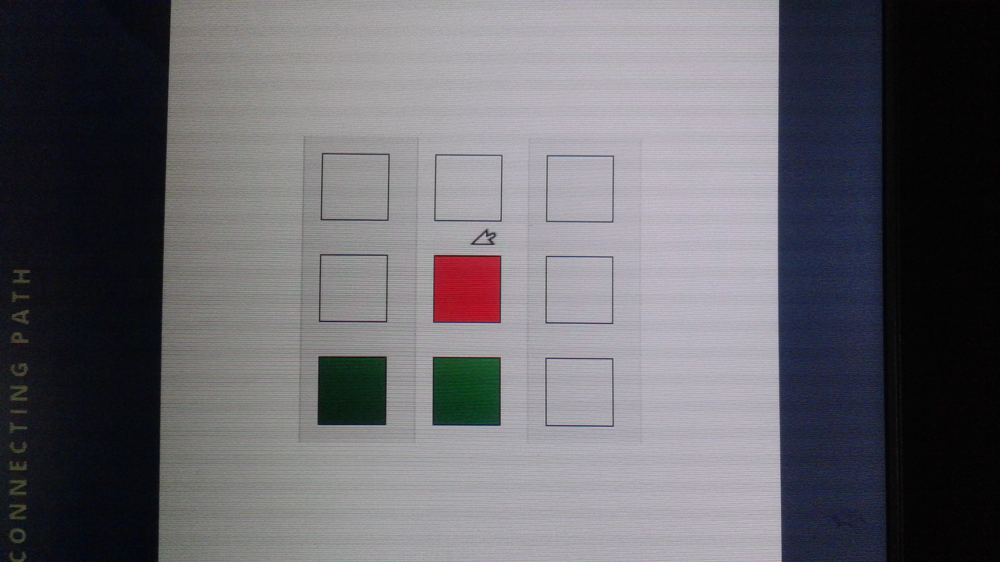

Connecting Path

FirstStage
As soon as you start the game ..
A path will be shown for few seconds.

SecondStage
Now the empty grid is displayed.

ThirdStage
Guess the path.
If the path is correct then game will be continued

FourthStage
If the path is not correct then game will be discontinued